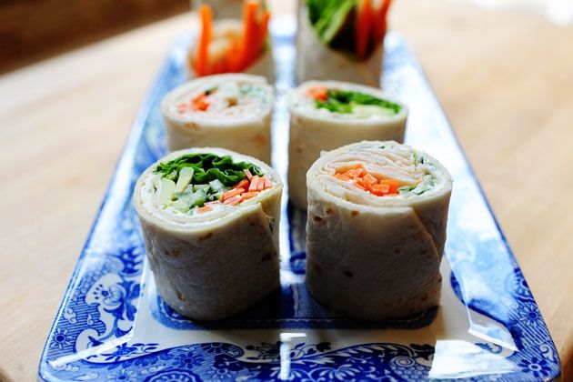

Tortilla Rollups

A simple, versatile rollup recipe
Ingredients
- 8 oz. weight Cream Cheese, Softened
- 1 tbsp. Chopped Green Onions Or Chives
- 1 tbsp. Minced Fresh Parsley
- 8 whole Basil Leaves, Chopped (or Chiffonade)
- Salt And Pepper, to taste
- 1 tsp. Fresh Lemon Juice
- 6 whole Taco Sized Flour Tortillas
- 1/2 lb. Shaved Turkey
- 3 whole Carrots, Peeled And Julienned
- 1 whole Cucumber, Seeds Scraped Out And Julienned
- 3 leaves Green Leaf Lettuce, Spine Removed
- 2 whole Avocados, Sliced
Steps
- Make the herbed cream cheese by combining the softened cream cheese with the chives, parsley, basil, salt and pepper, and lemon juice. Stir to combine.
- Spread cream cheese in a thin layer over the tortillas. Lay ingredients down the middle of the tortilla: for the turkey rollup, use turkey, carrots, and cucumber. For a "salad" rollup, use lettuce, carrots, cucumber, and avocado. Let the veggies extend past the edges on either side.
- Roll up the tortillas as tightly as they'll go, then wrap each rollup in plastic wrap and refrigerate for one hour.
- To slice, cut each rollup exactly in half, then line up the two halves and cut them in half again. Stand the end pieces up so that the veggies stick out the top.